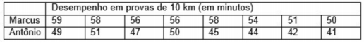
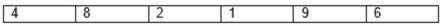

CLIENTES - POLOS

Tenha acesso a provas sem fazer precisar fazer login. Para ter acesso a centenas de simulados de provas para estudar, tudo de forma rápida, simples e segura, faça o login com seu RA e senha.SAIBA MAIS
Disciplina: 701130 - BIOESTATÍSTICA
Questão 1: Controlar os erros de medida é muito importante para garantir a qualidade dos dados coletados. Leia a afirmativa a seguir e marque a alternativa correta: “O erro sistemático é um erro de medida preferível que o aleatório, pois é mais fácil conhecermos e quantificarmos esse erro, PORQUE É um erro que varia de forma não constante ao redor da média da medida. Com isso, sua exclusão se torna fácil”. A) As duas afirmativas são verdadeiras e a segunda não justifica a primeira. B) As duas afirmativas são verdadeiras e a segunda justifica a primeira. C) As duas afirmativas são falsas. D) A primeira afirmativa é verdadeira e a segunda é falsa. E) A primeira afirmativa é falsa e a segunda é verdadeira.
Questão 2: No ano de 2010, dois alunos de uma academia, Marcus e Antônio, participaram de oito provas de corrida de 10 km. Observe, na tabela a seguir, os desempenhos de Marcus e Antônio nas referidas provas.  Com base nos dados apresentados na tabela, calcule o desempenho médio nas provas de 10 km no ano de 2010, para os alunos Marcus e Antônio, e marque a alternativa correta. A) Marcus tem uma média de 56 minutos e Antônio uma média de 45 minutos. B) Marcus tem uma média de 58 minutos e Antônio uma média de 46 minutos. C) Marcus tem uma média de 46 minutos e Antônio uma média de 55 minutos. D) Marcus tem uma média de 55 minutos e Antônio uma média de 46 minutos. E) Marcus tem uma média de 59 minutos e Antônio uma média de 51 minutos.
Questão 3: A avaliação da normalidade de distribuição dos dados torna-se extremamente importante, pois é um dos principais critérios a serem considerados para escolher o teste estatístico. Com base nisso, leia as afirmativas e escolha a alternativa correta. I -Numa curva com distribuição normal, com simetria perfeita dos dados em torno da média, a média, a mediana e a moda não coincidem. Isso significa que serão valores diferentes. II -A curva normal é uma linha contínua com a forma aproximada de um sino, utilizada para avaliara normalidade de distribuição dos dados. III -A curva normal pode ser classificada em platicúrtica, leptocúrtica e mesocúrtica. A) A afirmativa I está correta e as afirmativas II e III estão incorretas. B) As afirmativas I, II e III estão corretas. C) As afirmativas II e III estão corretas e a afirmativa I está incorreta. D) As afirmativas I, II e III estão incorretas. E) As afirmativas I e II estão corretas e a afirmativa III está incorreta.
Questão 4: Um grupo de indivíduos foi submetido à prática de 12 meses de treinamento em plataformavibratória. De acordo com os objetivos do seu estudo, você fará avaliação da força desses praticantes na condição inicial (antes de começar o treinamento), após três meses, seis meses, nove meses e doze meses. Assinale a alternativa que apresenta, respectivamente, qual o teste estatístico que você deverá utilizar para que essas comparações sejam feitas simultaneamente, pressupondo que haja normalidade de distribuiçãode dados e caso não haja normalidade de distribuição de dados, A) Teste de Friedman e Anova. B) Anova e teste de Friedman. C) Teste t para amostras independentes e dependentes. D) Teste t pareado e teste t não pareado. E) Teste t não pareado e teste t pareado.
Questão 5: A Bioestatística envolve técnicas para coletar, organizar, descrever, analisar e interpretar dados biológicos provenientes de experimentos ou observações. Esses dados também são chamados de variáveis, que são representações de cada característica da unidade experimental de uma amostra ou população. As variáveis podem ser classificadas como qualitativas ou quantitativas. Das alternativas a seguir, quais variáveis podem ser classificadas como qualitativas e quantitativas, respectivamente: A) Número de saltos e grau de instrução. B) Altura e peso corporal. C) Cor dos cabelos e gênero. D) Classe social e salário. E) Séries de um exercício e sobrecarga de um equipamento.
Questão 6: Um grupo de indivíduos sedentários é submetido a um período de seis meses de treinamento de força. Nessa situação, você pretende comparar o ganho de força desse grupo entre condição pré e pós-treinamento. Pressupondo que haja normalidade de distribuição de dados, qual teste estatístico você deve utilizar para realizar essa comparação? A) Teste t pareado. B) Teste t para amostras independentes. C) Anova. D) Teste de Friedman. E) Teste t para uma amostra.
Questão 7: Imagine que você tenha os seguintes valores no conjunto de dados:  Veja o conjunto de dados e assinale a alternativa correta. A) A posição da mediana é 4 e o valor da mediana é 6. B) A posição da mediana é 3,5 e o valor da mediana é 5. C) A posição da mediana é 4 e o valor da mediana é 5. D) A posição da mediana é 5 e o valor da mediana é 6. E) A posição da mediana é 3 e o valor da mediana é 4.
Questão 8: Quando temos o objetivo de investigar a interferência de uma variável sobre outra, é importante formular adequadamente as hipóteses e o problema de pesquisa. I -O problema de pesquisa é o contexto que estamos analisando, nesse sentido, é fundamental enxergarmos as variáveis de análise no nosso estudo, em particular, as variáveis dependentes e independentes. II -A hipótese de pesquisa ou hipótese alternativa é o resultado esperado pelo pesquisador. III -A hipótese nula serve para avaliar a confiabilidade dos resultados. Segundo a hipótese nula,não há diferença entre os resultados, ou seja, não há relação entre as variáveis independente e dependente. A) A afirmativa I está correta e as afirmativas II e III estão incorretas. B) As afirmativas I, II e III estão corretas. C) As afirmativas II e III estão corretas e a afirmativa I está incorreta. D) As afirmativas I, II e III estão incorretas. E) As afirmativas I e II estão corretas e a afirmação III está incorreta.
Questão 9: Imagine uma situação na qual queiramos analisar a correlação que a densidade óssea apresenta com o nível de escolaridade. No caso, a correlação tem o valor de r = -0,2. Assinale a alternativa que interpreta corretamente esse resultado. A) A densidade óssea apresenta uma correlação forte e direta com o nível de escolaridade. B) A densidade óssea não se relaciona com o nível de escolaridade, pois o valor de r é negativo. C) A relação entre as variáveis é direta, porém muito fraca. A relação entre as variáveis somente seria forte se fosse maior que 1,0. D) A densidade óssea apresenta uma correlação forte e inversa com o nível de escolaridade. E) A relação entre as variáveis é inversa, porém muito fraca, indicando que provavelmente as duas variáveis não estão relacionadas.
Questão 10: As variáveis classificadas como qualitativas podem ser do tipo nominais ou do tipo ordinais. Já as variáveis classificadas como quantitativas podem ser do tipo discretas ou contínuas. Assinale a alternativa que apresenta, respectivamente, variáveis qualitativas nominais e ordinais, e variáveis quantitativas discretas e contínuas. A) Idade, cor dos olhos, número de repetições, tempo de caminhada. B) Escala subjetiva de esforço, tempo de corrida, nota do semestre, número de alunos de uma classe. C) Cor dos olhos, nível de condicionamento, equipamentos de uma academia, peso de um aluno. D) Distância de nado, cor dos cabelos, altura, número de halteres. E) Quantidade de bolas de futebol, número de chutes a gol, tamanho do segmento perna, peso corporal.
O Gerenciador completo do seu Polo
Se existe algo que tira a paciência e o sono de qualquer gestor em um negócio, é a demora para obter respostas que deveriam estar disponíveis rapidamente para auxiliar não somente em tomada de decisões como em ações comerciais que tragam dinheiro para a empresa.
Saiba maisRua Júlio Câmara, 706 - Anexo 1 - Centro, Afogados da Ingazeira - PE, 56800-000